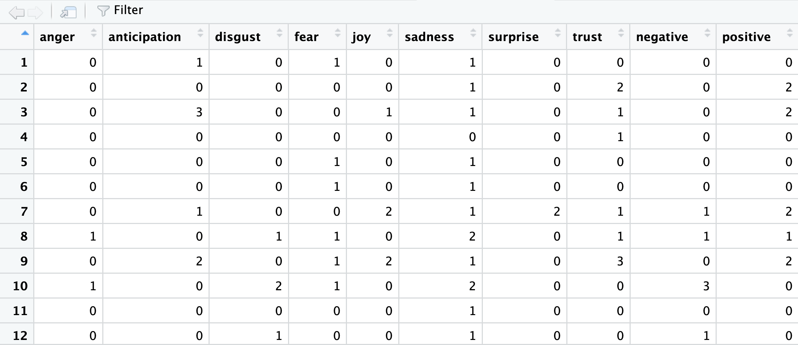
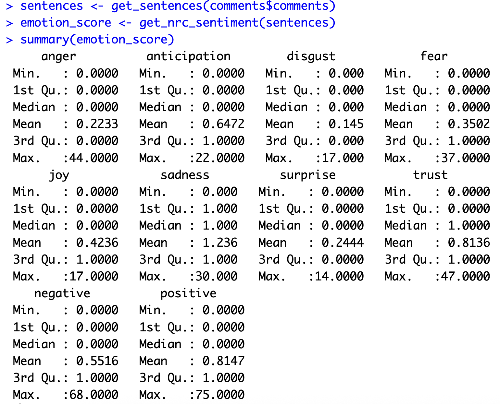
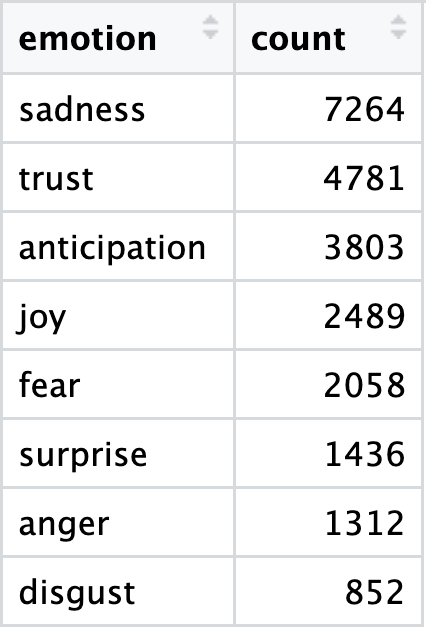
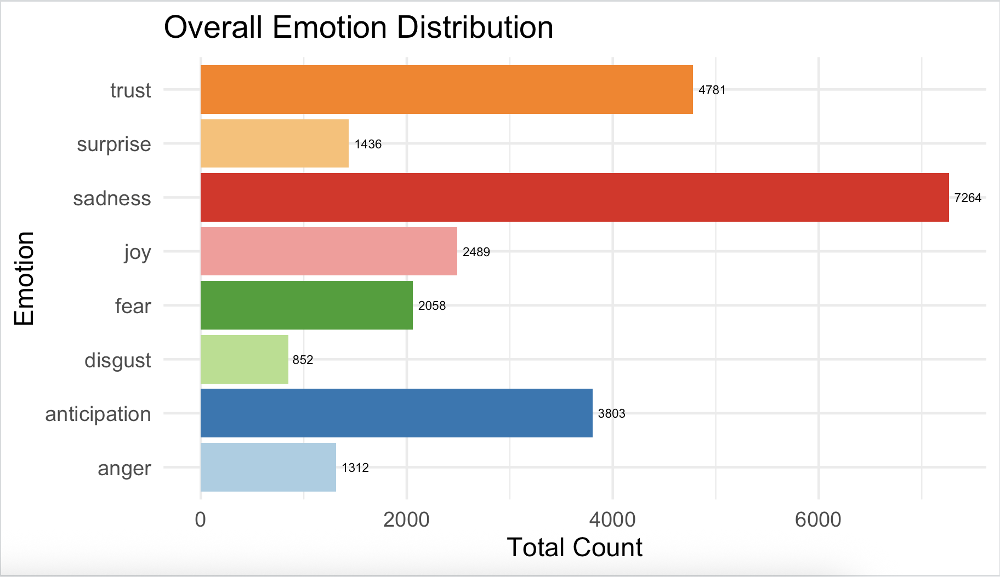
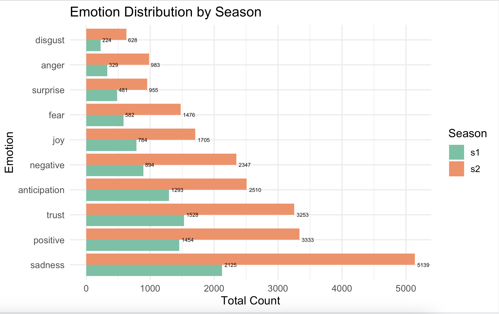
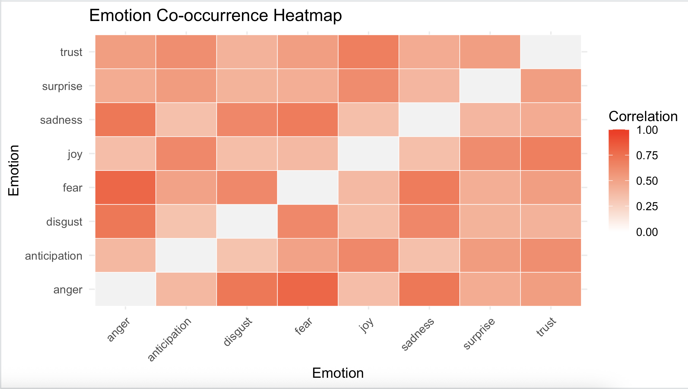

Emotion Detection
Emotion detection is another NLP technique aimed at identifying and quantifying human emotions expressed in text, which builds directly on traditional sentiment polarity analysis focusing on capturing more nuanced emotional states. While polarity classification identifies whether a text expresses positive, negative, or neutral sentiment, it does not capture the specific type of emotion behind that sentiment. For example, two negative texts could express very different emotions—one might convey anger, while another reflects sadness. By extending polarity into multiple emotional dimensions, emotion detection provides more granular and more actionable insights into how people truly feel.
We will use the syuzhet package (more info) to to help us classify emotions detected in our dataset. The name “syuzhet” is inspired by the work of Russian Formalists Victor Shklovsky and Vladimir Propp, who distinguished between two aspects of a narrative: the fabula and the syuzhet. The fabula represents the chronological sequence of events, while the syuzhet refers to the way these events are presented or structured; the narrative’s technique or “device.” In other words, syuzhet focuses on how the story (fabula) is organized and conveyed to the audience.
The syuzhet package implements the National Research Council Canada (NRC) Emotion Lexicon which maps words to basic emotions, in addition to polarity scores, allowing for fine-grained emotion scoring at the word, sentence, or document level.
This framework uses eight categories of emotions based on Robert Plutchik’s theory of the emotional wheel, a foundational model that illustrates the relationships between human emotions from a psychological perspective. Plutchik’s wheel identifies eight primary emotions: anger, disgust, sadness, surprise, fear, trust, joy, and anticipation. As illustrated in Figure ? below, these emotions are organized into four pairs of opposites on the wheel. Emotions positioned diagonally across from each other represent opposites, while adjacent emotions share similarities, reflecting a positive correlation.

The NRC Emotion Lexicon was developed as part of research into affective computing and sentiment analysis using a combination of manual annotation and crowdsourcing. Human annotators evaluated thousands of words, indicating which emotions were commonly associated with each word. This method ensured that the lexicon captured human-perceived emotional associations, rather than relying solely on statistical co-occurrences in text.
Since its release, the NRC Emotion Lexicon has become a widely used resource in computational social science, marketing analytics, and text mining, because it allows researchers to move beyond simple positive/negative polarity to fine-grained emotion detection, making it possible to analyze the emotional content of text at scale.
You may explore NRC’s lexicon Tableau dashboard to explore words associated with each emotion category:
Now that we have a better understanding of this package, let’s get back to business and perform emotion detection to our data.
Emotion Detection with Syuzhet’s NRC Lexicon
Detecting Emotions per Comment/Sentence
sentences <- get_sentences(comments$comments)Compute Emotion Scores per Sentence
emotion_score <- get_nrc_sentiment(sentences)The get_nrc_sentiment() function assigns emotion and sentiment scores (based on the NRC lexicon) to each sentence. Each sentence gets numeric values (0 or 1) for the eight emotions to represent their absence or presence. The output also includes positive and negative sentiment scores:

Review Summary of Emotion Scores
Let’s now compute basic statistics (min, max, mean, etc.) for each emotion column and get an overview of how frequent or strong each emotion is on our example dataset.
summary(emotion_score)This step should generate the following output:

Based on the results the overall emotion in these comments leans heavily toward sadness, which scored the highest average (1.236). It looks like sadness and trust are the most common feelings, since they’re the only ones with a median score of 1.000, meaning at least half the comments contained words for them.
On the flip side, Disgust was the rarest emotion, with the lowest average (0.145). It’s also worth noting that while Sadness and Trust are the most common, a few comments really went off the rails with Trust (47.000), Anger (44.000), and Fear (37.000), hitting the highest extreme scores.
Regroup with comments and IDs
After computing scores for emotions, we want to link them back to its original comment and ID.
comments$comments <- sentences
emotion_data <- bind_cols(comments, emotion_score)bind_cols() merges the original comments data frame with the new emotion_score table.
Summarize Emotion Counts Across All Sentences
Now, let’s count how many times each emotion appears overall.
emotion_summary <- emotion_data %>%
select(anger:trust) %>% # get only the emotion columns
summarise(across(everything(), sum)) %>% # sum counts
pivot_longer(
cols = everything(),
names_to = "emotion",
values_to = "count"
) %>% # long format for easy plotting
arrange(desc(count)) # sort emotions
Plot the Overall Emotion Distribution
ggplot(emotion_summary, aes(x = emotion, y = count, fill = emotion)) +
geom_col(show.legend = FALSE) + # Bar plot for emotion counts
geom_text(aes(label = count), hjust = -0.2, size = 2) + # Add count labels
scale_fill_manual(values = brewer.pal(10, "Paired")) + # Color palette
theme_minimal(base_size = 12) + # Clean theme
labs(title = "Overall Emotion Distribution",
x = "Emotion", y = "Total Count") + # Titles and axis labels
coord_flip() # Flip axes for readability
Add a “Season” Variable (Grouping) and Summarize
Let’s now add a new column called season by looking at the ID pattern — for example, s1_ means season 1 and s2_ means season 2. This makes it easy to compare the emotional tone across seasons.
emotion_seasons <- emotion_data %>%
mutate(season = ifelse(grepl("^s1_", id), "s1",
ifelse(grepl("^s2_", id), "s2", NA)))Time to aggregates the total count of each emotion within each season.
# Aggregate emotion counts per season
emotion_by_season <- emotion_seasons %>%
group_by(season) %>%
summarise(
across(anger:positive, ~sum(., na.rm = TRUE))
)Plotting the Data
Comparing emotions by season:
emotion_long <- emotion_by_season %>%
pivot_longer(cols = anger:positive, names_to = "emotion", values_to = "count")
ggplot(emotion_long, aes(x = reorder(emotion, -count), y = count, fill = season)) +
geom_col(position = "dodge") + # separates bars for clarity
geom_text(aes(label = count), hjust = -0.2, size = 2) +
scale_fill_brewer(palette = "Set2") +
theme_minimal(base_size = 12) +
labs(title = "Emotion Distribution by Season",
x = "Emotion", y = "Total Count", fill = "Season") +
coord_flip()
Now, let’s explore to see which emotions tend to occur together, revealing patterns of emotional co-occurrence in the text.
# Select only emotion columns (excluding overall positive/negative sentiment)
emotion_matrix <- emotion_data %>%
select(anger:trust)
# Compute the correlation matrix for emotions
# Pearson correlation shows how strongly two emotions co-occur
co_occurrence <- cor(emotion_matrix, method = "pearson")
# Remove diagonal values to avoid coloring the perfect self-correlation
diag(co_occurrence) <- NA
# Convert the correlation matrix to long format for ggplot
co_occurrence_long <- as.data.frame(as.table(co_occurrence))
colnames(co_occurrence_long) <- c("emotion1", "emotion2", "correlation")
# Plot the co-occurrence heatmap
ggplot(co_occurrence_long, aes(x = emotion1, y = emotion2, fill = correlation)) +
geom_tile(color = "white") + # draw grid tiles
scale_fill_gradient2(
mid = "white", high = "red", midpoint = 0,
limits = c(0, 1), na.value = "grey95", name = "Correlation"
) +
theme_minimal(base_size = 12) +
theme(axis.text.x = element_text(angle = 45, hjust = 1)) + # rotate x-axis labels
labs(
title = "Emotion Co-occurrence Heatmap",
x = "Emotion",
y = "Emotion"
)After running the script we should get the following heat map:

Based on these results, Overall, the emotional picture is pretty interconnected. It looks like the negative emotions—Sadness, Fear, Anger, and Disgust—are more tightly linked, meaning when people express one of these, they usually express the others too. In other words, they often show up together in the same comments.
While we’ve only scratched the surface of this particular dataset, the steps we’ve completed—from calculating basic sentiment scores to visualizing the co-occurrence of emotions—have demonstrated the power of sentiment and emotion detection. You now have the foundational skills to convert unstructured text into actionable data, allowing you to understand the polarity (positive/negative) and specific emotional landscape of any textual dataset.
Saving our work
After performing all the calculations and visualizations, it’s important to save the results so they can be reused or shared.
write_csv(emotion_data, "output/sentiment_emotion_results.csv")